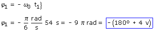
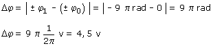

a) Ecuaciones del movimiento:
Aplicación: Datos: t1 = 54 s, Incógnita: φ1  Está en la posición -180º tras haber pasado cuatro veces por el origen El desplazamiento angular será:  El móvil ha dado cuatro vueltas y media Observa: No es lo mismo las vueltas dadas (4.5) que los pasos por el origen (4) |